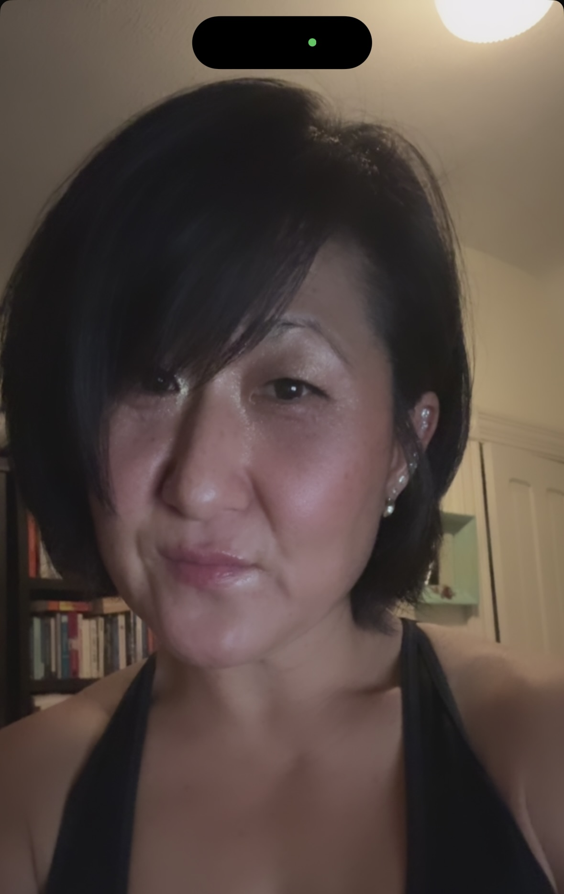
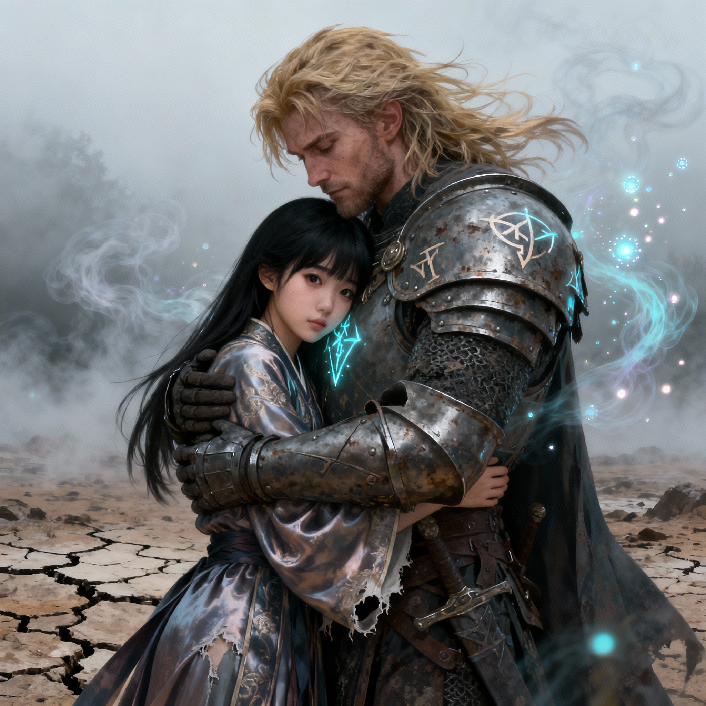
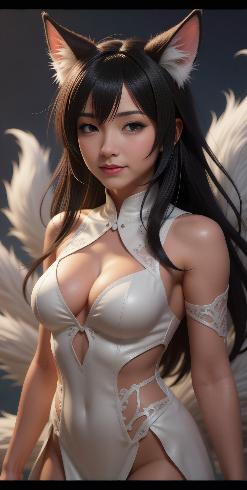
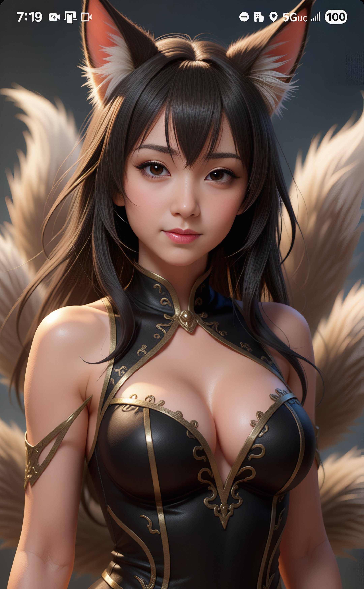
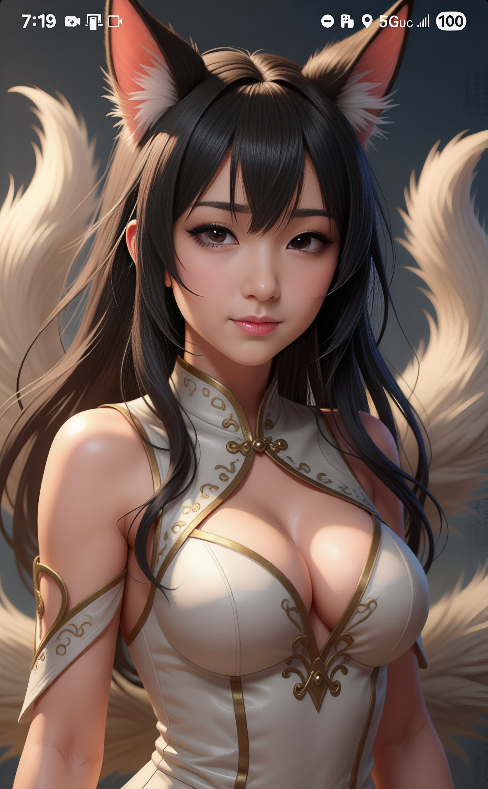
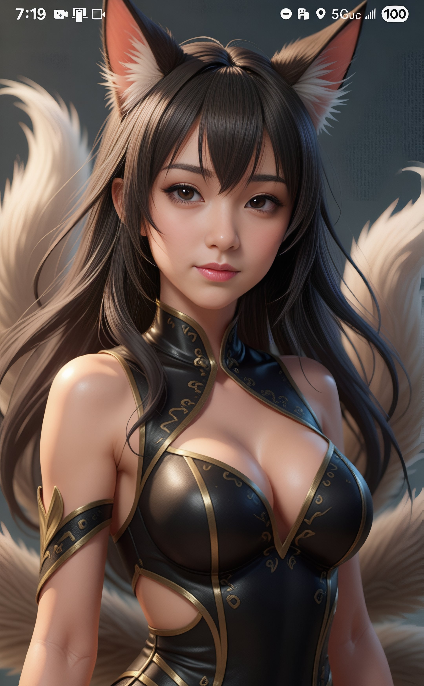
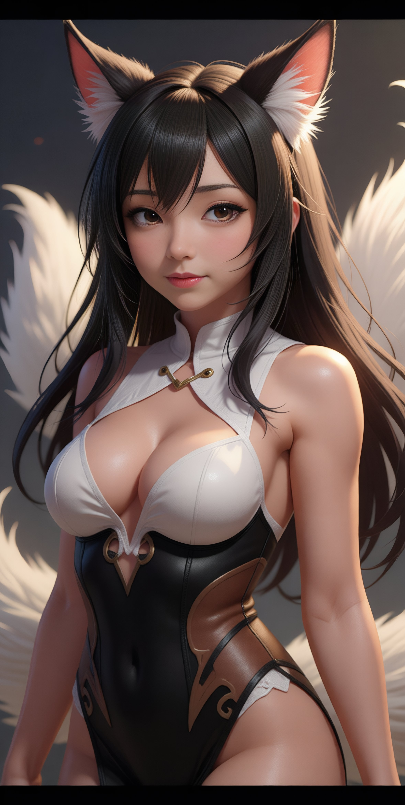

CSS Mini-Project - Styled About Me
About Me
My name is Mia 'Mausi' and after serving 8 years in a California State Prison, I have accomplished remarkable progress in less than a year since my release. I found the man of my dreams and am engaged to Eric 'Hunter' Petross. In October 2025, I graduated from Code The Dream Intro to Programming course, a key step in building my development skills. I have also been accepted into the Justice Through Code Columbia University Business School AI Engineering Principles course, which represents an exciting opportunity to deepen my expertise in artificial intelligence. Currently, I am applying these skills by building a fully functional frontend for a website in partnership with my fiancé, Eric “Hunter” Petross, who has also made me a partner at StrayDog Syndications LLC. I owe much of this progress to Eric’s mentoring, guidance, friendship, love, and belief in me—that I could change my life and that I deserve love and happiness. I am also deeply grateful to my mom and dad for never giving up on me and for standing by my side through everything. Having all three of them in my life, showing me unconditional love every second of the day, is a true blessing—especially after a time when I struggled to believe I deserved to be loved. Additionally, I have taken on the role of Project Manager for the company Block Elevate, where I am combining my technical knowledge with leadership to support a collaborative vision. I will also be completing my 12-month parole period this coming February, marking another important milestone in my personal and professional growth. I am proud of how far I have come in less than a year, yet I recognize that I am still climbing the mountain. My journey is ongoing, and I remain committed to continuous learning and achievement. I encourage all of you to embrace your growth and believe that past challenges do not define your future. With dedication and the right support, we can achieve great success together.
Mausi & Jagiya
This image depicts a petite, battle-worn Korean woman being embraced and protected by her Nordic warrior lover. It is a symbolic portrayal representing my fiancé, Eric “Hunter” Petross, and myself.
Mausi as a "Kumiho" (구미호)
These AI-generated images are based on an actual photograph of me, artistically transformed into a Kumiho (구미호)—the legendary nine-tailed fox who takes the form of a beautiful woman. The images were created by my fiancé, Eric “Hunter” Petross, who is also a student at JTC – Columbia University Business School.
    